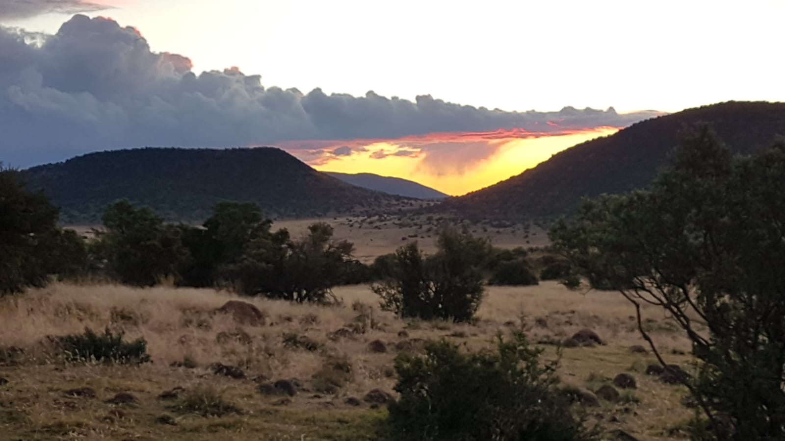
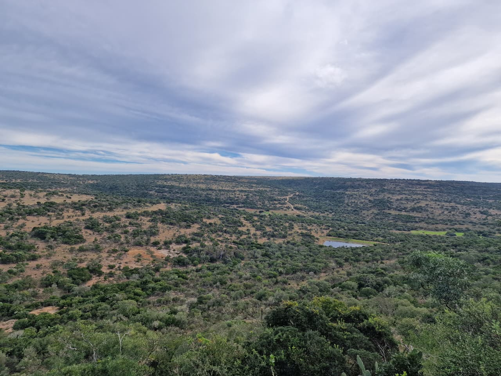
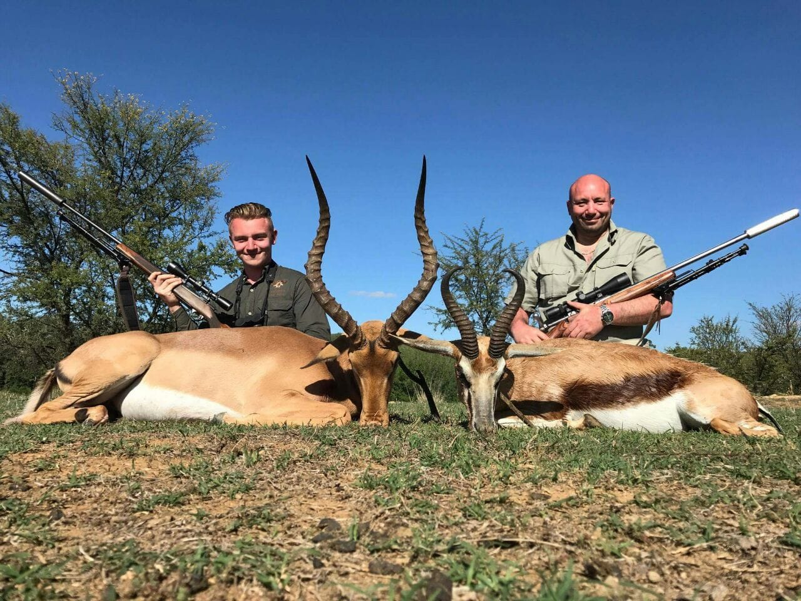
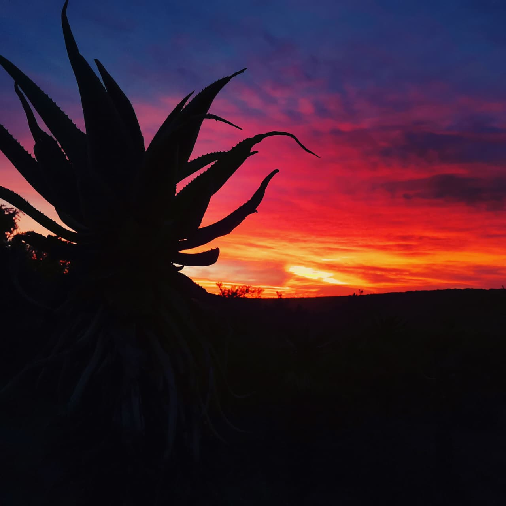
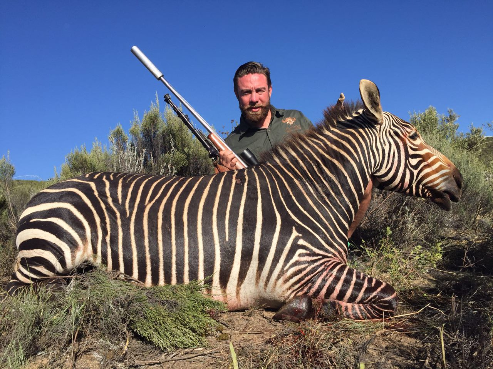
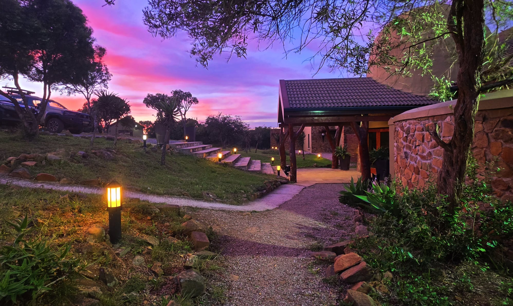
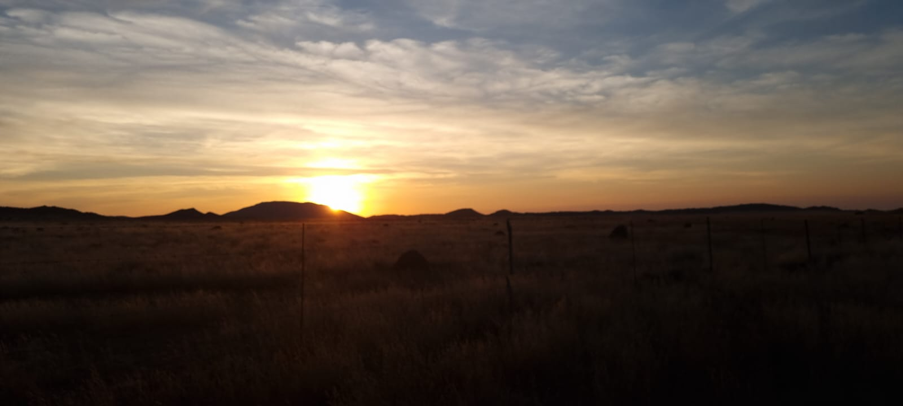
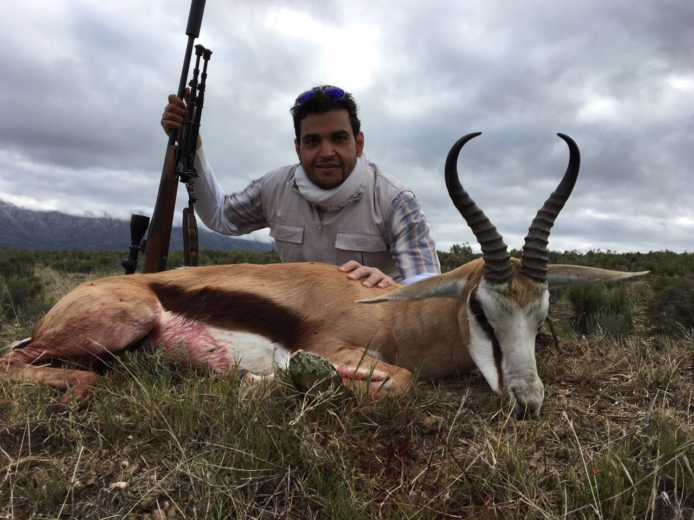
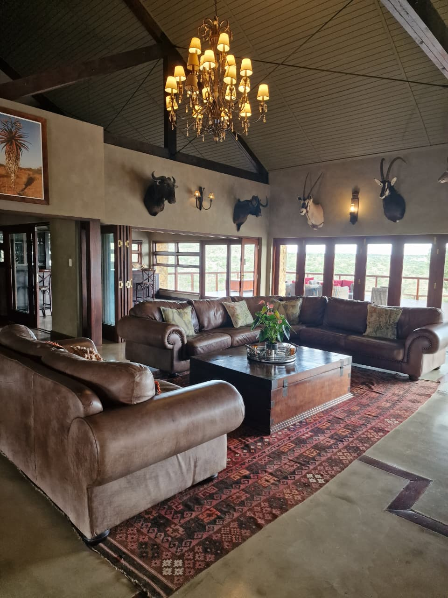

POG African Safaris
Arrive as a guest.
Hunt among friends.
Leave as family.
Ethical, premium hunting safaris in South Africa's Eastern Cape.

POG African Safaris
Ethical, premium hunting safaris in South Africa's Eastern Cape.
Welcome
Whether you are pursuing your dream African trophy, introducing your family to the wonders of the bush, or simply seeking an adventure unlike any other, our goal is to make every moment special and every safari unforgettable.
The Experience
Over 40 species across mountain, valley, and plains terrain.
Seasoned PHs who put ethics and fair-chase first.
Return each evening to a warm hearth, hearty meals, and comfort.
Testimonials
"I cant wait for my next hunt."
"Willie is, for me, the best PH I have hunted with, and they are a couple now hunting over the last 13 years in South Africa. I have always felt like I am in good hands when he has guided me but also seeing him guide a lot of other hunters, I am so impressed about his ability to read different hunters and then adapt his guiding depending on the hunters skills and need for support. Willie always want you to succeed. Not just to shoot an animal but he finds pleasure in helping you achieve what you want and what makes you happy. So persistent, always doing his very best. He has not let me down once! Willie is the PH I can recommend just anyone to go hunt with, and I will know they wont be dissapointed. He is helpful, outgoing and fun, and the time spent in camp will be fun and easy! I cant wait for my next hunt with Willie!"
"Young and old alike feel welcome."
"Hallo my dear friends. I have worked with Willie for about 20 years with clients. I don’t know many others who have such a winning manner, he can make everyone, young and old alike feel welcome. Willie never gives up, the clients gets what they want in the end. I recommend that you hunt with him and you will see."
"The whole experience becomes a dream come true."
"Hunting Africa was a “bucket list” dream I had for many years. But when I finally made the decision to go, I didn’t exactly know what to expect. But by the grace of god and good luck I met PH Willie Van Zyl. His hunting skills and work ethic along with the willingness to share his vast knowledge of the game is incredible. Since that first moment in Africa he has by far exceeded all expectations. And when you pair that with the 5 star accommodation and hospitality the whole experience becomes a dream come true. With Willie and Marius beside you in the field making sure everyone gets a world class hunt, and then Nikita and Ansu making you feel like family and preparing some of the best food you’ll ever have with meals fit for a king, the whole operation is nothing short of pure GREATNESS! The hunting is what brought me to Africa for the first time, but the relationships I have made with some of the best people I’ve ever met is what keeps me coming back year after year. This is why, what was supposed be a “once in a lifetime bucket list” hunt has turned into a way of life. I’m blessed and forever grateful for all the wonderful memories made. I can’t wait to get back to being in the presence of greatness spending time with all my friends at POG Safaris."
Gallery







